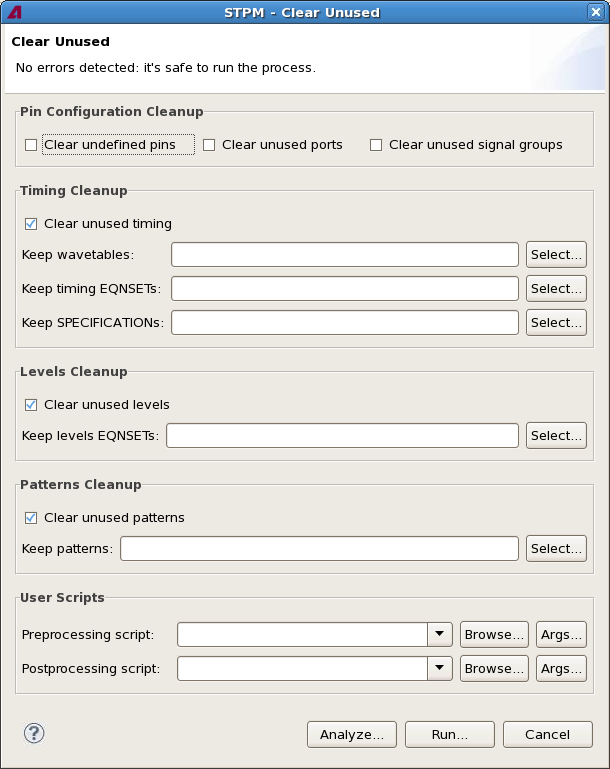

Clear Unused dialog
The Clear Unused dialog lets you set the parameters for removing unused primaries from the test program. Its options correspond to the parameters of the clear_unused control file command.
The command affects the entire test program (not just selected test groups).
If you want to use any of the "Keep ..." options, the test program must first be analyzed. This is done by clicking the Analyze button and is required only once per test program; the analysis also applies to the Clear Duplicated dialog.

The dialog is opened by the Clear Unused command from the STPM menu. It contains these fields and options:
- Content error message: The message at the top of the dialog, just below the title,
notifies you of any errors or warnings caused by your settings, for example, an empty testflow
path:
 : This icon indicates an error. The error is noted in the message, and the offending
field or option is marked with the same icon. The Run button is disabled until the problem is
resolved.
: This icon indicates an error. The error is noted in the message, and the offending
field or option is marked with the same icon. The Run button is disabled until the problem is
resolved. : This icon indicates a warning. The problem is noted in the message, and the
offending field or option is marked with the same icon. You can, however, still click Run to
execute the command with this setting.
: This icon indicates a warning. The problem is noted in the message, and the
offending field or option is marked with the same icon. You can, however, still click Run to
execute the command with this setting.
- Pin Configuration Cleanup: In this section, you specify which unused elements to remove from
the pin configuration:
- Clear undefined pins: If this option is checked, executing the command will remove all timing and level specifications for unused pins from the test program. This option is the same as the proc_nonexistent_pins parameter of the clear_unused command.
- Clear unused ports: If this option is checked, executing the command will remove all unused ports from the test program. This option is the same as the proc_ports parameter of the clear_unused command.
- Clear unused signal groups: If this option is checked, executing the command will remove all unused signal groups (pin groups) from the test program. This option is the same as the proc_groups parameter of the clear_unused command.
- Timing Cleanup: In this section, you specify how to handle unused timing settings:
- Clear unused timing: If this option is checked, unused timing settings are removed from the test program. This option is the same as the proc_timing parameter of the clear_unused command.
- Keep wavetables: In this field, you can specify wavetables that
will be ignored. That is, these wavetables will not be removed even if they are unused.
You can specify the wavetables to keep by clicking Select and checking the desired wavetables, or you can enter them manually in the field. If you enter multiple items manually, separate them with commas.
This option corresponds to the skip_wavetables parameter of the clear_unused command.
- Keep timing EQNSETs: In this field, you can specify timing equation
sets that will be ignored. It is similar to Keep wavetables, described
above.
This option corresponds to the skip_tim_eqnsets parameter of the clear_unused command.
- Keep specifications: In this field, you can specify specifications
that will be ignored. It is similar to Keep wavetables, described
above.
This option corresponds to the skip_specifications parameter of the clear_unused command..
- Levels Cleanup: In this section, you specify how to handle unused level settings:
- Clear unused levels: If this option is checked, unused level settings are removed from the test program. This option is the same as the proc_levels parameter of the clear_unused command.
- Keep level EQNSETs: In this field, you can specify level equation
sets that will be ignored. It is similar to Keep wavetables, described
above.
This option corresponds to the skip_lev_eqnsets parameter of the clear_unused command.
- Patterns Cleanup: In this section, you specify how to handle unused patterns:
- Clear unused patterns: If this option is checked, unused patterns are removed from the test program. This option is the same as the proc_patterns parameter of the clear_unused command.
- Keep patterns: In this field, you can specify patterns that will be
ignored. It is similar to Keep wavetables, described above.
This option corresponds to the skip_patterns parameter of the clear_unused command.
- User Scripts: In this area, you can specify scripts that are executed
before or after the Clear Unused command:
- Preprocessing script: You can specify any executable script to be
executed when you click Run, before the clear_unused
command itself is executed.
Clicking Browse lets you choose a script file from disk.
Clicking Args lets you specify which arguments to pass to the script. (The script is assumed to know how to handle these arguments.)
- Postprocessing script: This is similar to Preprocessing script, except that the script is run after the clear_unused command has been executed.
- Preprocessing script: You can specify any executable script to be
executed when you click Run, before the clear_unused
command itself is executed.
- Analyze: Clicking this button analyzes the test program, compiling lists of duplicated and unused elements for display in the Select dialogs for specifying exceptions.
- Run: Clicking this button removes unused elements according to the
specified settings.
The progress of the command is displayed in the STPM console view which is automatically opened.
Functional changes
- Introduced in SmarTest 7.2.2